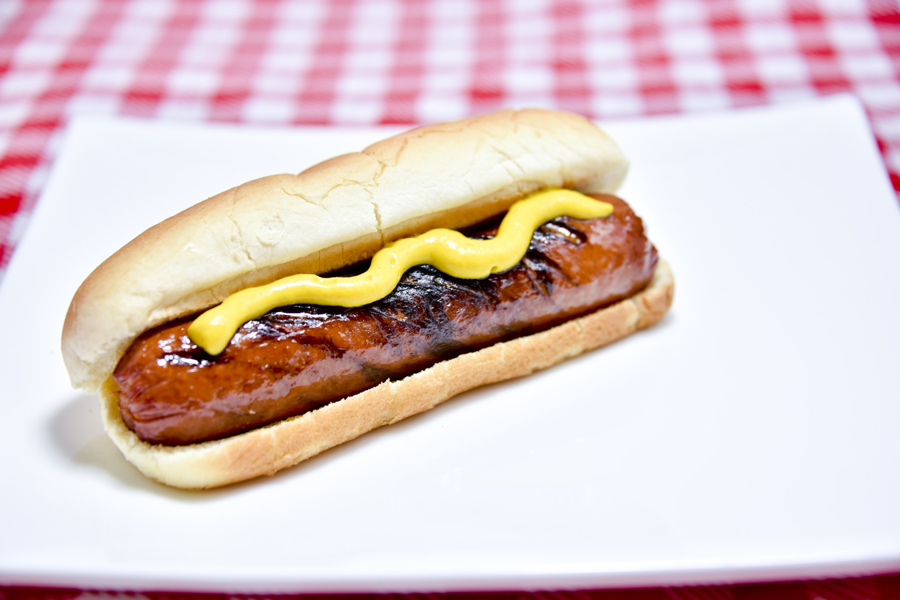

Hot Dog
Home

Ingredients
- 4 hot dog buns
- 4 hot dogs
Steps
- Gather all ingredients. Preheat an air fryer to 400 degrees F (200 degrees C).
- Place buns in a single layer in the air fryer basket; cook in the preheated air fryer until crisp, about 2 minutes. Remove buns to a plate.
- Place hot dogs in a single layer in the air fryer basket; cook for 3 minutes.
- Serve hot dogs in toasted buns.